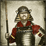
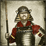

Requires
- Buildings:

Enables
- Buildings:

- Units:

 



Spawned Garrisons
- Units:


Basic Building Statistics (can be modified by difficulty level, arts, skills, traits and retainers)
- Cost: 6000
- Recruitment capacity (units in training): +1
- Enables recruitment of Rank 1 shinobi
Clan Effects
- -2 to modernisation (clan development)
Description
Skill is the first step towards mastery.
A master dojo trains young men in the proper and honourable duties of their class. It enables the recruitment of units and agents of the traditional, Japanese kind. After 250 years of peace, the traditions of the samurai had become a little set in their ways under the Tokugawa Shogunate. It had suited the Shoguns to keep the samurai busy with mastering the old skills of swordsmanship, but they had put an equal emphasis on the more "gentlemanly" skills of the arts. The samurai, as a class, were still influential but it is a fair judgement to say that their war skills had been blunted by disuse, even as individuals mastered their weapons skills.